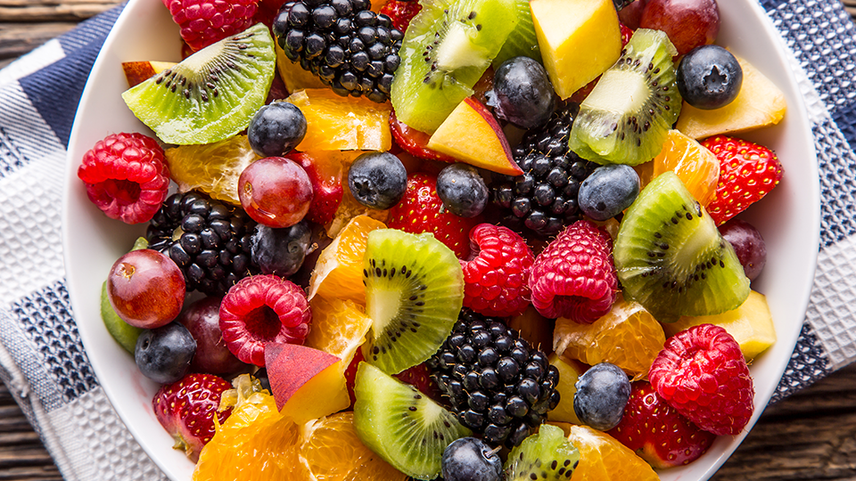
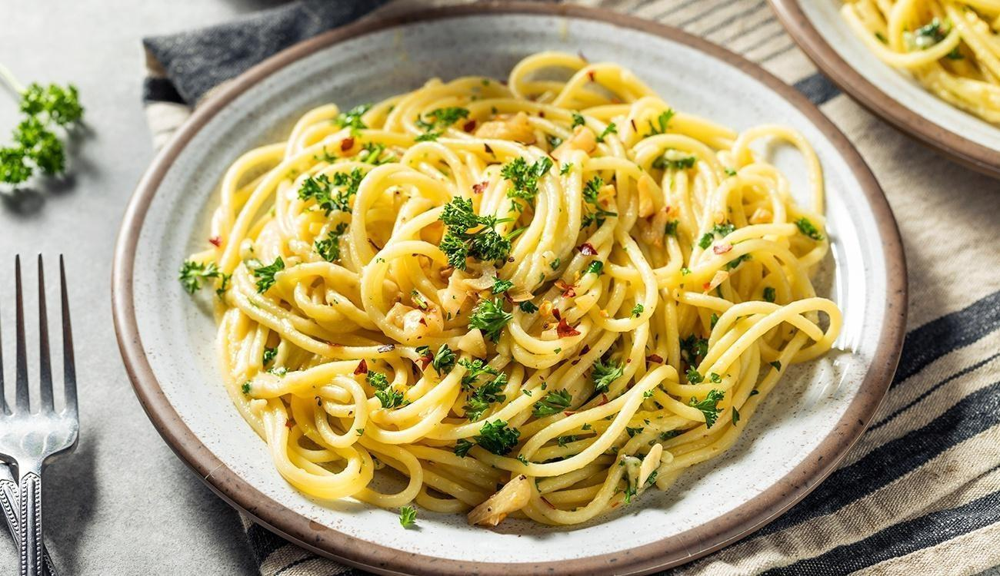

Salada de Frutas
- Maçã
- Banana
- Manga
- Melão
Modo de Preparo: Misture todas as frutas em uma tigela e sirva gelado.

Macarrão ao Alho e Óleo
- Macarrão
- Alho
- Azeite
- Sal
Modo de Preparo: Cozinhe o macarrão, refogue o alho no azeite e misture ao macarrão.

Torta de Limão
- Biscoito Maizena
- Manteiga
- Leite Condensado
- Limão
Modo de Preparo: Triture os biscoitos, misture com manteiga e forme a base. Em seguida, misture leite condensado com suco de limão e despeje sobre a base.